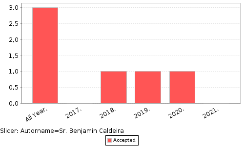
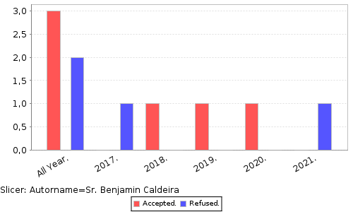
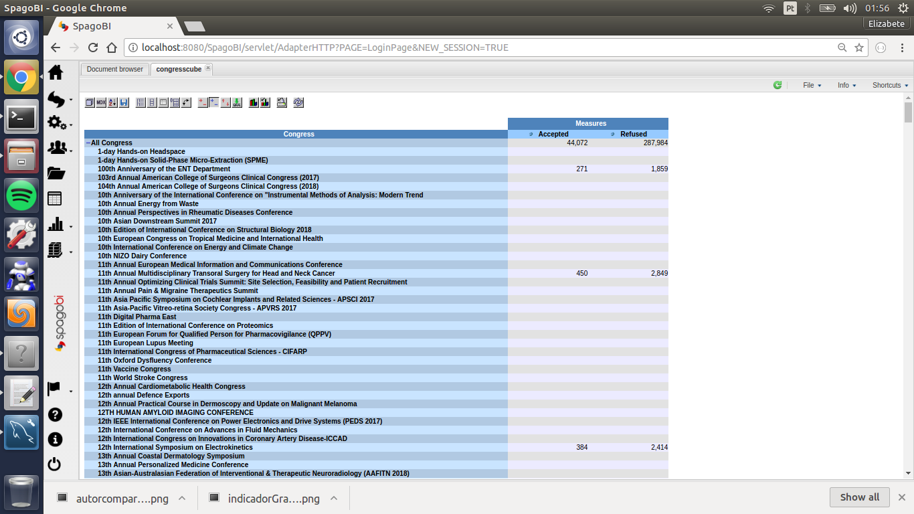
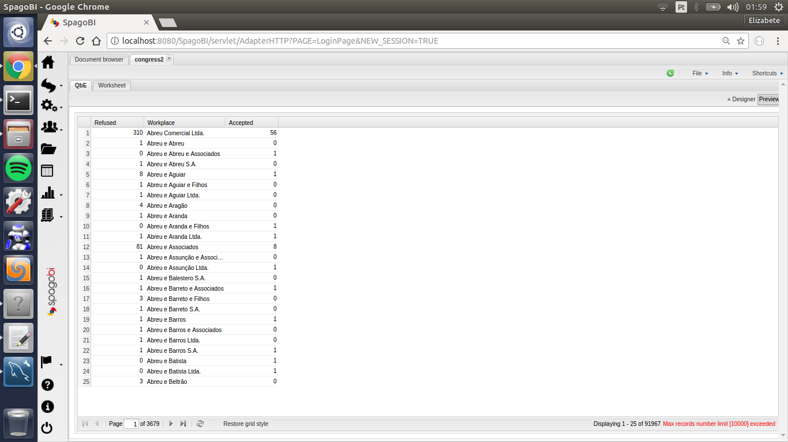

Aplicação OLAP - Coletando informações de indicadores
Após finalizada as etapas de modelagem do star schema da aplicação e migração dos dados do banco relacional para o datawarehouse através do processo de ETL, agora é possível tirar conclusões sobre o andamento do negócio através dos indicadores escolhido. O indicador em questão, já explicado no post anterior, foi o número de artigos publicados por autor. A figura 1 ilustra o número de artigos publicados pelo autor de nome "Sr. Benjamin Caldeira" entre os anos de 2017-2021. A query usada no editor MDX para gerar o gráfico foi:
select {[Measures].[Accepted]} ON COLUMNS,
{[Year]} ON ROWS
from [Admissions]
where ([Autor].[Sr. Benjamin Caldeira])

O indicador exemplicado pode ser usado, por exemplo, para avaliar a produção acadêmica de pesquisadores ao longo do tempo, a figura 2 mostra a comparação entre artigos recusados e aceitos.

O gráfico ilustrado foi obtido através da interface do SpagoBI para o cubo olap, a figura 3 ilustra a tela inicial da interface citada.

A figura 3 dá uma visão geral de congressos e o total de artigos recusados e aceitos. Também é possível visualizar informações e gerar gráficos através da interface do Qbe (figura 4).

Na figura acima é possível visualizar os artigos aceitos e recusados agrupados por local de trabalho. É possivel alterar o estilo do gráfico via interface e o conteúdo das colunas através do editor MDX que é bastante simplicado e permite a elaboração de queries rapidamente.